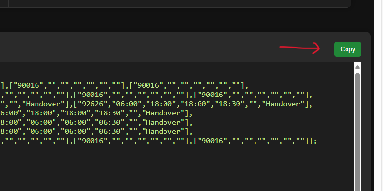
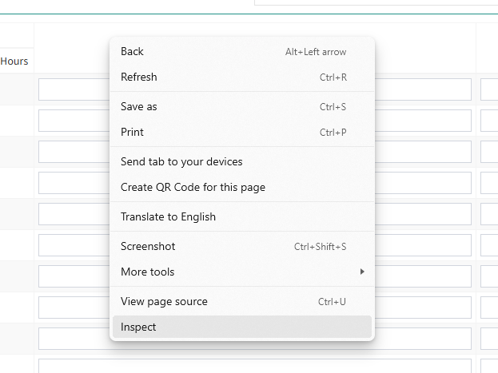
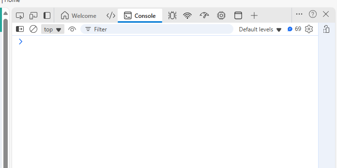
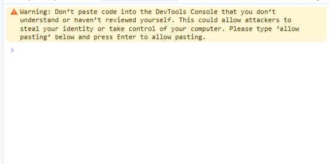
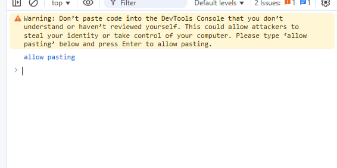
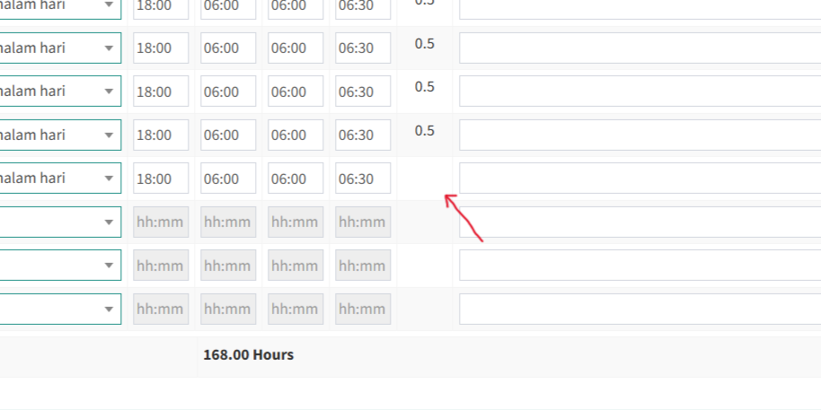

- Schedule akan menyesuaikan berdasarkan grup yang dipilih
- Input remarks dan justification akan mengupdate remarks dan justification data timesheet pada saat on duty, off duty tetap kosong. Klik tombol Update
- Scroll ke bawah, klik tombol copy
- Buka Timesheet, tambahkan data baru untuk bulan yang dipilih
- Di halaman input data timesheet, buka inspect element "klik kanan kemudian pilih inspect"
- Pilih tab console, paste kode yang sudah dicopy sebelumnya, tekan enter
- Jika keluar warning seperti di atas, ketik allow pasting, tekan enter
- Paste kode yang sudah dicopy sebelumnya, tekan enter
- Jika ada data yang masih error seperti di atas, klik simulate maka data akan update sendiri